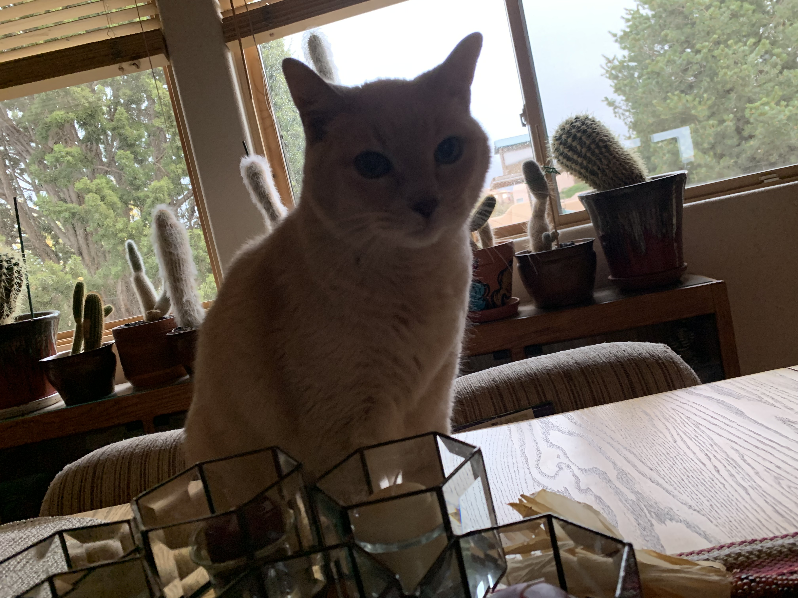
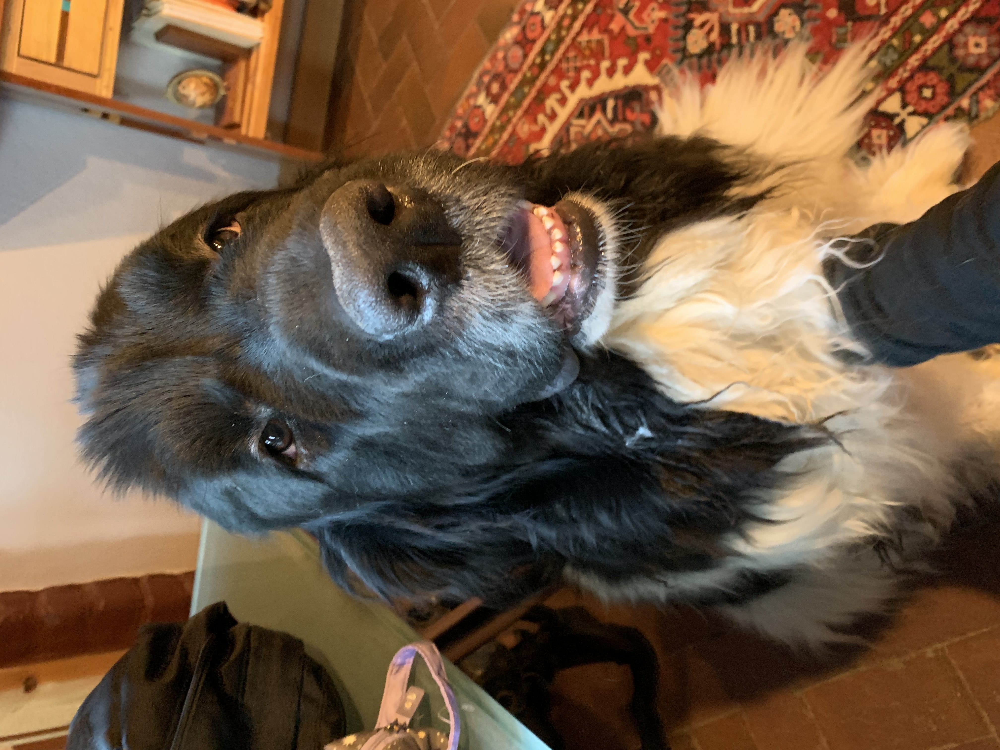
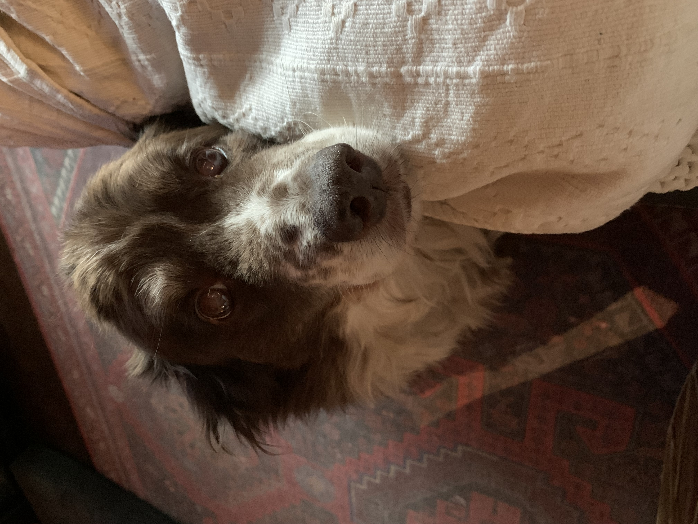

Whether it's for the holidays, for surprise visits to family and friends, or someone just wants to get away for a while, we all love traveling, right? While it's true that traveling is fun with pets, sometimes you just can't take your furry friends with you. Many animals are not allowed on planes, or it would be too long to take them in a car with you. Animals left alone without their family are prone to anxiety, stress, and other negative behavioral and emotional changes. Boarding kennels also may induce similar changes due to pets being left in unfamiliar environments with other stressed and potentially nervous animals.
My pet sitting provides a safe and familiar environment for your pet, allowing them to stay in the comfort of their own home, while also being able to keep their regular routines. Whether it's walking at a certain time, keeping consistent with a specific feeding time, or administering proper care, medicine, or therapy, all animals will be able to feel comfortable and relaxed with a pet sitter around.
  
I provide many different kinds of pet sitting services including drop-ins, daytime sitting, dog walking, and overnight stays. All options include positive socialization, playtime, and a great experience for your pet.
The best way to decide whether pet sitting would be the best option for you and your pet, would be to consider the length of your trip, and to consult your own knowledge about your pet's temperament and comfort with a pet sitter.
I am more than happy to schedule visits, to meet both you and your pet. Together, we can come up with a plan personalized just for you and your pet.